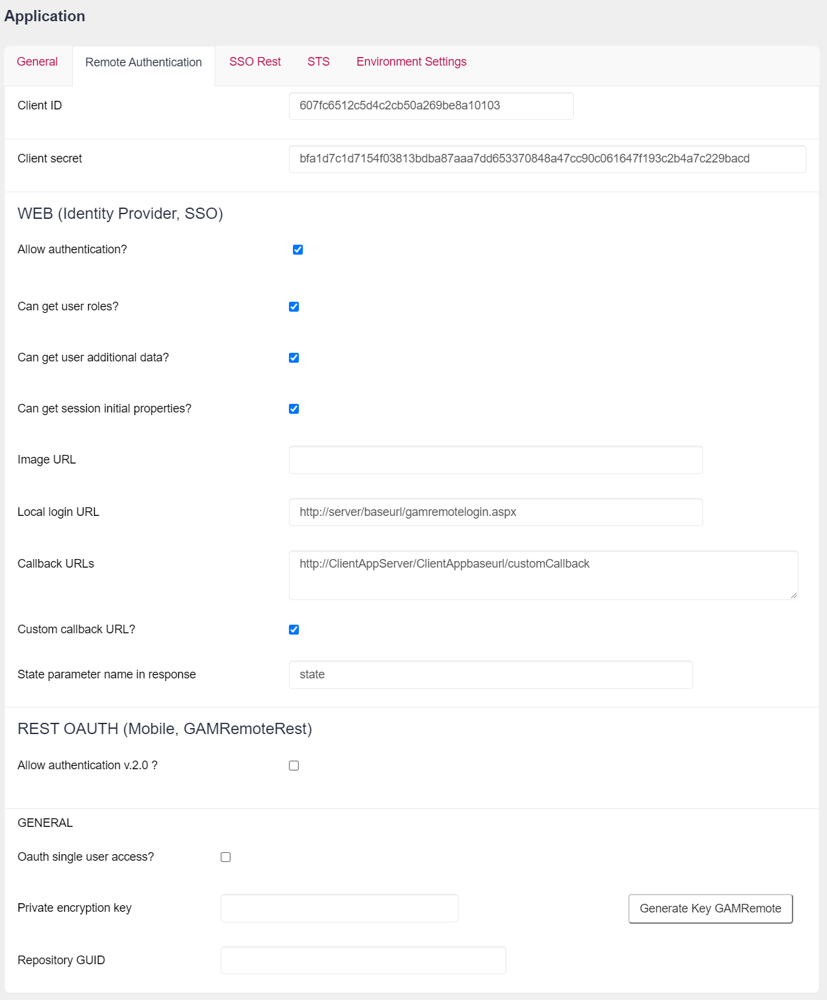

Below is a guide to configure the GAM Identity Provider for GAM - GAMRemote Authentication Type.
First, define a GAM Application on the server for each web application that is going to be a client of the Identity Provider. The credentials of this Application are going to be used for defining the GAM Remote Authentication type in the client's GAM database, as explained in Client Configuration for GAM Remote Authentication.
When the GAM - Web Backoffice is used, Applications are added using the Application menu item. Go through "Applications", "Add" button. This calls the Web panel GAMExampleEntryApplication.
In the General tab, enter the name, description, and other basic information of the Application.
In the Remote Authentication tab, you can enter the Application credentials and other information needed when you are configuring GAM remote.

In sum, the client application information that must be provided is as follows:
- Client ID. Client ID of the Application. It has to be a valid GUID.
- Client Secret. Client Secret of the Application. It has to be a valid GUID.
The "Allow authentication" check box - under the section Web (Identity Provider, SSO) must be selected to enter the following information (*):
- Can get user roles. See Managing Roles in applications using SSO
- Can get user additional data. When additional data must be passed (such as dynamic attributes of GAM User), this option must be selected. The same has to be enabled by the client.
- Can get session initial properties. If true, the Application is enabled to send the initial properties to the clients. This corresponds to the &GAMApplication.ClientAllowGetSessionInitialProperties property.
For more information, see Howto: sending and receiving properties set at the login.
- Local Login URL. URL of the server application login (for example: /TestGAMSSOServer.NetEnvironment/gamremotelogin.aspx). The format is: /<BaseURL>/[<package>.]gamremotelogin. The GAMRemoteLogin object is distributed in the GAM Examples.
- Callback URL. URL of the client application (for example: http://server:8080/TestGAMRemoteJavaSQLServer). The format is: http://<Server>:<Port>/<BaseURL>. For Java, do not include "/servlet". Since GeneXus 16 Upgrade 7, it is possible to set more than one callback URL. The URLs must be separated by ";". This scenario is useful when many clients have to connect to the same Identity Provider using the same GAM Application. For example, when converting an application and trying to keep both the old and the new version (each one is in a different URL), it is not necessary to define a new GAM Application within the repository in order to specify each Callback URL; it's enough to define both URLs in the Callback URLs property of the same Application.
- Custom callback URL?. If selected, GAM will not modify the callback URL. Developers can make their own procedure that handles the response. The custom callback URL field needs to be marked in the GAM Remote authentication type on the client side.
- State parameter name in response. The response URL will have the name of the parameter that is placed here. By default, the parameter name is 'state'.
- Image URL. URL of the image logo of the client application.
- Private Encryption Key. With this private encryption key, the communication between client applications and the server application is encrypted. However, the use of HTTPS is recommended.
(*) If "Allow authentication" is not selected, the following error is thrown when the user tries to authenticate to the Identity Provider:
Remote authentication is not allowed in this application. Please contact the administrator. (GAM230)
Client Configuration for GAM Remote Authentication
The following error:
Error code 222
Error message Callback URL doesn't match the one configured in the application (http://<server>/<baseURL>/oauth/gam/callback)
This is due to misconfiguring the callback URL in the Identity Provider. Note that in The Provider, the callback URL is http://<server>/<baseURL>.